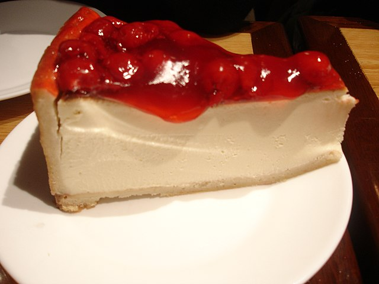

Cherry Cheesecake

This luscious pound cake has a cherry smothered crust and is moist and flavorful. Makes a great gift for any occasion
Ingredients
- 1 (8 ounce) package cream cheese, softened
- 1 cup butter, softened
- 1 ½ cups white sugar
- 1 ½ teaspoons vanilla extract
- 4 eggs
- 2 ¼ cups all-purpose flour
- 1 ½ teaspoons baking powder
- ⅛ teaspoon salt
- 1 cup candied cherries, halved
- ¼ cup all-purpose flour
- ½ cup chopped pecans
Steps
- Preheat oven to 325 degrees F (165 degrees C).
- Cream the cream cheese, butter or margarine, sugar, and vanilla together until smooth. Beat in eggs one at a time. Sift together 2 1/4 cup flour, baking powder, and salt; fold into cream cheese mixture. Dredge cherries in 1/4 cup flour, and fold into batter.
- Sprinkle pecans over the bottom of an ungreased 10 inch angel food tube pan. Bottom should be completely covered. Add a few more pecans if necessary. Spoon batter into pan on top of nuts.
- Bake for about 75 minutes, or until an inserted wooden pick comes out clean. Allow cake to cool in pan. Run knife around outside edge and center tube. Ease cake out of pan, and onto plate.
back